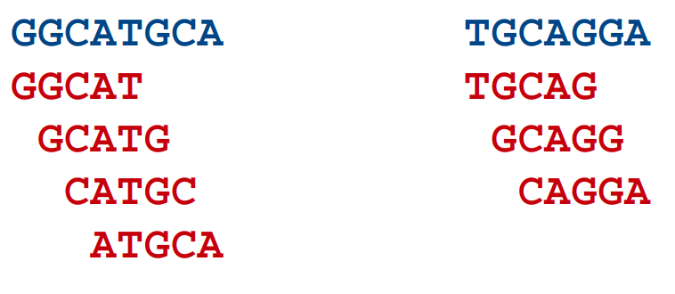
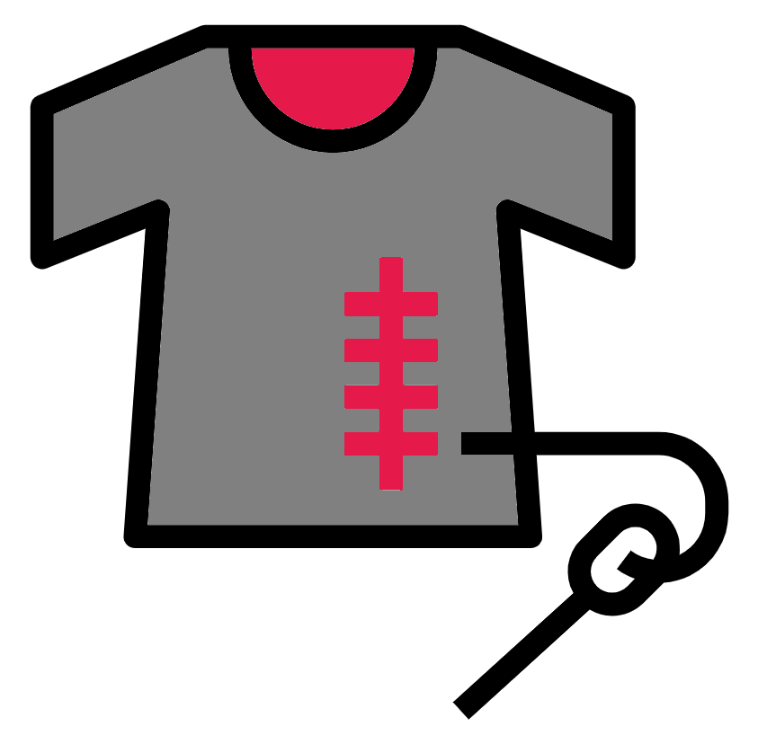
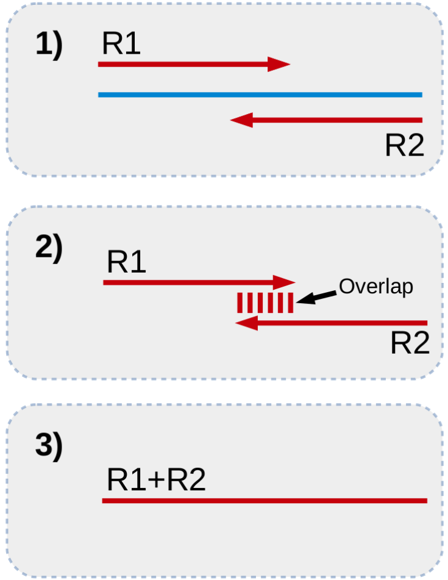
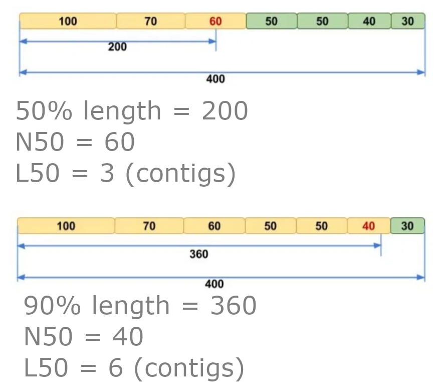

Chapter 10 Metagenome assembly
So far we have directly analysed the read data itself which is perfectly fine for taxonomic profiling and for certain methods of functional profiling. However, Illumina reads are generally short and therefore can not provide us with much data on larger constructs that are in the metagenomic samples, e.g. genes. While it is possible to predict from which gene a sequence read might originate, the short nature of the query can sometimes lead to ambiguous results.
Additionally, depending on the application it can become computationally intensive to analyse large numbers of reads. Here, we are only using samples with 1 million reads. Some metagenome samples consist of 50-100 million+ read pairs. If such a sample belonged to a set of 100 samples, that would be up to 10 billion read pairs, or 2 trillion bases of sequence data, with many of these being redundant.
For this reason, it is sometimes advantageous to assemble the reads into contigs, using a meta-genome assembler. This has the dual effect of:
- Reducing the overall size of the data for analysis. If a metagenome was sequenced at 50x depth, then by assembling it you could theoretically reduce the amount of sequence to analyse by 50-fold.
- Increase the size of the fragments you will analyse. This is the main advantage of an assembly, as the ~100 bp reads can be pieced together to form 100,000 kb+ contigs. These contigs will contain complete genes, operons and regulatory elements: Reconstructed genome sections.
Here, we will carry out a couple of assemblies on our dataset.
10.1 Metagenome assembly: Conda

We will use the shotgun_meta conda environment so use a terminal where this is activated or open a new one and run . useshotgun.
10.2 A primer on short read assembly

Illumina reads are too short and numerous to use traditional overlap-layout-consensus assemblers as such an approach would be far too computationally intensive. Instead, we use De Bruijn graph based assemblers. Briefly, these operate as follows:
- All reads are broken down into k-length overlapping fragments (k-mers). e.g. if we choose a k-mer size of 5 bp, the following two sequences (blue) would be broken down into the k-mers below them (red):

- All k-mers are linked to other k-mers which match with a k-1 length overlap (i.e. that overlap by all but one base:
- Paths are routed through the graph and longer contigs are generated:

The example here is a vast oversimplification of the complexity of a De Bruijn graph (i.e. there are no branches!). Routing through the graph is never as simple as this as some k-mers will lead to multiple k-mers, which can result in the break point of a contig. This is especially true for complex metagenomic data.
Generally speaking, the shorter the k-mer, the more branches there will be, the trickier the graph is to resolve, so the resulting contigs are smaller. Assemblers usually perform better with longer k-mer lengths but even then there might not be enough depth of sequencing to generate all k-mers that form overlaps, therefore leading to break points. Finding the right k-mer size usually involves testing several.
Fortunately, the assembler we will use, MEGAHIT, allows us to build an assembly using multiple k-mer lengths iteratively. The other great advantage about MEGAHIT is that it is quick and efficient. We will use MEGAHIT on our data soon, but first there is an additional processing step for our sequences…
10.3 Stitching read pairs

As mentioned, longer k-mers generally perform better, but as our maximum read length is 100 bp, we are limited to a maximum k-mer length of 99 bp. However, we can get even longer k-mers if we stitch our read pairs together.
Note: This method will not work if your reads have no overlap. If you are not sure if your reads have overlap ask the team who sequenced them.
Remember that a read pair consists of two sequences read from each end of a fragment of DNA (or RNA). If the two sequences meet in the middle of the fragment and then overlap, there will be a region of homology which we can use to merge the two reads in the pair together (See next image).
First, we obtain our forward and reverse reads, derived from different ends of the same fragment. Second, we look for sufficient overlap between the 3’ ends of our sequences. Third, if there is sufficient overlap, we combine, or stitch, the two reads together to form one long sequence.

Once we have longer stitched reads, we can increase the k-mer length for our assembly.
There are a number of pieces of software that can be used to stitch reads (e.g. Pear, Pandaseq) but today we will use one called FLASH:
Make a new output directory for the stitched reads and run FLASH:
#Change directory to home
cd ~
#Make and move into new directory
mkdir 5-Stitched
cd 5-Stitched
#Run flash
flash -o K1 -z -t 12 -d . \
../2-Trimmed/K1_R1.fq.gz ../2-Trimmed/K1_R2.fq.gzHere, we are telling FLASH to use an output file name prefix of K1, that the input is zipped, that the output directory is here (.) and to use the two read files for Sample K1. Once FLASH has finished running, it will display on screen how well the stitching process went, in this case a low amount of reads were combined. Have a look what files have been generated.
lsWe have three new fastq.gz files. One containing the stitched reads (K1.extendedFrags.fastq.gz) and two containing the reads from pairs that could not be combined (K1.notCombined_1.fastq.gz and K1.notCombined_2.fastq.gz).
We can also see what the new read lengths are:
less K1.histogramScroll down with the down key and you will see that we are looking at a histogram showing the proportion of reads at different lengths. We can now start assembling our stitched reads for this sample.
10.4 Assembly
Create a new directory to store our assembly in.
cd ..
mkdir 6-Assembly
cd 6-AssemblyNow run the metagenome assembler MEGAHIT using our newly stitched read data.
megahit \
-r ../5-Stitched/K1.extendedFrags.fastq.gz \
-1 ../5-Stitched/K1.notCombined_1.fastq.gz \
-2 ../5-Stitched/K1.notCombined_2.fastq.gz \
-o K1 \
-t 12 \
--k-list 29,49,69,89,109,129,149,169,189Here, you have instructed MEGAHIT to use both the stitched and unstitched reads, to output the assembly in a subdirectory called K1 and to use 12 CPUs.
The last option --k-list instructs MEGAHIT to first generate an assembly using a k-mer size of 29 bp and when that is complete, integrate the results into an assembly using a k-mer size of 49 bp, and so on up to a final iteration using a k-mer size of 189 bp. This large range of k-mer lengths should give us a good assembly, given the data. However, it may take a while to run so this might be a good time to read on.
If you need a command prompt (your current one is gone because MEGAHIT is running), right click on the main screen, choose Applications -> Shell -> bash.
Once the assembly is completed, we can look at the output FASTA file containing the contigs:
less K1/final.contigs.fa10.5 QUAST
We can also generate some metrics based on the assembly.
Due to python version conflict we need to use another conda environment.
Open a new terminal (right click on the main screen, choose Applications -> Shell -> bash) and run the below.
#use script to activate conda env
. usegenoassessWe will use QUAST for genome contiguity assessment but first we will change directory to 6-Assembly and create a directory for the QUAST output.
#Change directory
cd ~/6-Assembly
#Create QUAST output directory
#The option -p will create a directory and any required
#parent directories
mkdir -p quast/K1The -p option of mkdir will cause the command to create any parent directories that are required to create the noted directory. I.e. quast will be created so K1 can be created.
Now to run QUAST.
#Generate contiguity statistics
quast -o quast/K1 K1/final.contigs.fa
#View QUAST html report
firefox quast/K1/report.htmlThe report tells us quite a bit about the assembly quality. Two definitions that you may not be aware of are N50 and N50 length (or, somewhat confusingly, L50 and N50, respectively!). If we were to order our contigs from largest to smallest, and total up the sizes from biggest downwards, the contig we reach where our total is 50% of the size of the whole assembly is the N50 contig (the smaller the number the better). The N50 length is the length of this contig; a weighted median contig length.

Questions - How do the contig metrics compare to the original reads?
- Now we have an assembly, albeit not a brilliant one due to us only having used 1 million reads, we can start to explore it.
There is also a metaQUAST specifically for metagenome assemblies but it requires reference assemblies be provided.